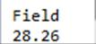
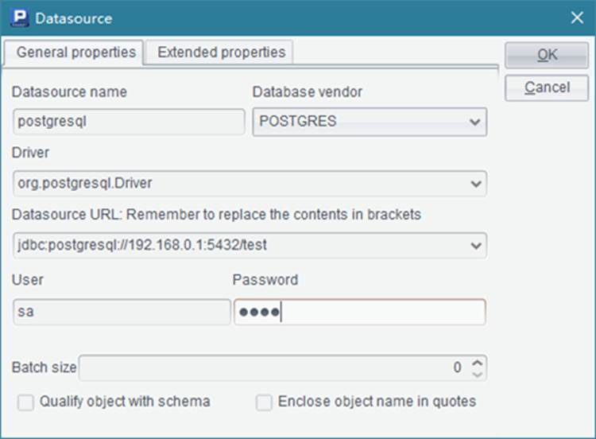

The raqsoftConfig.xml file contains configuration information, including esProc¡¯s main path, the script file¡¯s search path, and etc., as shown below:
<?xml version="1.0" encoding="UTF-8"?>
< Config Version="2">
<Runtime>
<DBList encryptLevel="0">
<!-- Data source name must be the same as that defined in the script file -->
<DB name="demo">
<property name="url" value="jdbc:hsqldb:hsql://127.0.0.1/demo"/>
<property name="driver" value="org.hsqldb.jdbcDriver"/>
<property name="type" value="13"/>
<property name="user" value="sa"/>
<property name="password" value=""/>
<property name="batchSize" value="1000"/>
<!--
Automatically connect or not. If the value is true, use db.query() function or a SQL statement starting with $ directly to access the database; if it is false, there will be no automatic connection; you should first establish the connection with connect(db) statement before you can access the database.
-->
<property name="autoConnect" value="true"/>
<property name="useSchema" value="false"/>
<property name="addTilde" value="false"/>
</DB>
<DB name="hsql">
<property name="url" value="jdbc:hsqldb:hsql://localhost/hsql"/>
<property name="driver" value="org.hsqldb.jdbcDriver"/>
<property name="type" value="13"/>
<property name="user" value="sa"/>
<property name="password"/>
<property name="batchSize" value="0"/>
<property name="autoConnect" value="false"/>
<property name="useSchema" value="false"/>
<property name="addTilde" value="false"/>
</DB>
</DBList >
<Esproc>
<!—esProc license file -->
<!-- esProc charset-->
<charSet>ISO-8859-1</charSet>
<!--
Configure the search path of the script file. Multiple paths separated by ";" are allowed. The script file can also be placed in the application project¡¯s classpath, which has the priority over the search path for file loading.
-->
<splPathList>
< splPath>D:\files\dfx;D:\files\txt;D:\files</splPath>
</splPathList>
<!—Date type, time type and other data types -->
<dateFormat> yyyy-MM-dd</dateFormat>
<timeFormat>HH:mm:ss</timeFormat>
<dateTimeFormat> yyyy-MM-dd HH:mm:ss</dateTimeFormat>
<!-- Method one for data source configuration: configure connection pool and specify the data source name in the application server -->
<!-- esProc main path, which is a single absolute path -->
<mainPath> D:\files</mainPath>
<!-- The save path for temporary files; it can be an absolute path. If using a relative path, put it under the main path; don¡¯t start a relative path with ¡°/¡± or ¡°\¡± -->
<tempPath>temp</tempPath>
<bufSize>65536</bufSize>
<localHost>192.168.0.86</localHost>
<localPort>8282</localPort>
<parallelNum>4</parallelNum>
<zoneLockTryTime>3600</zoneLockTryTime>
<!—Size of a binary file block -->
<simpleTableBlockSize>1048576</simpleTableBlockSize>
<!-- A null string in text data -->
<nullStrings>nan,null,n/a</nullStrings>
<fetchCount>9999</fetchCount>
<extLibsPath/>
</Esproc>
<Logger>
<Level>DEBUG</Level>
</Logger>
</Runtime>
<Server>
<!—Default connection; the connected source can be one in DBList or in the following JNDIList -->
<defDataSource>demo</defDataSource>
<JNDIList>
<!-- Data source name must be the same as that defined in the script file -->
< JNDI name="demo">
<property name="url" value="jdbc:hsqldb:hsql://127.0.0.1/demo"/>
<property name="driver" value="org.hsqldb.jdbcDriver"/>
<property name="type" value="HSQL"/>
<property name="user" value="sa"/>
<property name="password" value=""/>
<property name="batchSize" value="1000"/>
<!--
Automatically connect or not. If the value is true, just use db.query() function to access the database; if it is false, there won¡¯t automatic connection; you should first establish the connection with connect(db) statement before you can access the database.
-->
<property name="autoConnect" value="true"/>
<property name="useSchema" value="false"/>
<property name="addTilde" value="false"/>
</JNDI>
</JNDIList >
<!—log configuration file -->
<logConfig>raqsoftLog.properties</logConfig>
</Server>
<JDBC>
<!—Whether to read the runtime configurations or Server¡¯s JNDIList; delete the unwanted one -->
<load>Runtime,Server</load>
<!—After the jdbc gateway is configured, all statements will be parsed by the script file and return a table sequence or a cursor; the script file has two parameters: sql and args (which is the sequence of sql¡¯s parameters) -->
<gateway>executeSQL.dfx</gateway>
<!—Remote server list for a JDBC invoke for configuring IPs and port numbers of nodes -->
<Units>
<Node>192.168.0.197:8281</Unit>
</Units>
</JDBC>
<Init>
<!— The specified script file executed first for system initialization -->
<spl>initial.splx</spl>
</Init >
</Config>
Both esProc JDBC and the Integrated Development Environment (IDE) share the same raqsoftConfig.xml file, so you can configure the above information on the IDE interface.
Click Tool>Options on the menu bar to edit the configuration information on the Option window. The key information related to JDBC, like paths, format of date and time and so on, can be edited on the Environment page:
General page also provides JDBC-related settings, such as log level and number of parallel tasks:

Besides, the raqsoftConfig.xml file¡¯s data source information can be configured in the data source manager. Click Tool>Datasource connection on the menu bar to open the data source manager window:

You can add, delete or modify the data source configuration information in the data source manager. Click Edit to edit the connection parameters of the data source:

In the data source manager, you can set the data source driver, data source URL, user name, password, batch size, and other information. Note that demo is the system data source, whose connection parameters cannot be changed. In addition, esProc JDBC itself cannot be used as a data source during the data source connection configuration.
The <Server/> node configures connection pool, log configuration file, and other information. If a data source needs to be connected for the script file invoked through the esProc JDBC, the related information should be configured in raqsoftConfig.xml¡¯s data source or connection pool. Particularly, if db.query() function or $(db) sql statement is used to directly access the database, the autoConnect property of this database should be true. For detailed information about esProc JDBC, refer to Java Invocation.
In the log configuration properties file raqsoftLog.properties , you can configure log levels and other information:
// Log levels include OFF, ERROR, WARN, INFO, DEBUG and ALL, whose priority levels decrease from left to right. Level OFF turns off logging.
// Log messages. Level INFO indicates that messages of levels ERROR, WARN and INFO will be exported; each level exports messages likewise.
// Specify name and log level for Logger.
// Format: Level (can be omitted; default level is INFO), log name 1, log name 2.
Logger=LOG1
// Output log messages to the console. There are only two forms of message logging: console and file.
LOG1=Console
// INFO Log message level; messages whose priority levels are lower than it will be ignored. If it is omitted, level INFO is used by default.
LOG1.Level=DEBUG
// Output logs to the specified file.
// Specify the full path of LOG2; default full path is the application¡¯s current working path.
LOG2=C:/raqsoft.log
// Default mode of logging is appending if not specified.
LOG2.Append=true
// Maximum number of bytes in a log file; the default value is infinite if not specified.
LOG2.MaxFileSize=10MB
// Maximum number of backup files; the default value is 1 if not specified.
LOG2.MaxBackupIndex=2
//LOG2.Level=DEBUG
The raqsoftConfig.xml file in Java application¡¯s classpath will be automatically loaded in the use of esProc JDBC, and cannot be renamed at this point. But if esProc JDBC¡¯s connecting string uses the format like ...?config=..., the .xml file specified by config in the connecting string will be loaded for use in the configuration and the default file defined in the configuration will be ignored.
For example, with a connecting string like con= DriverManager.getConnection("jdbc:esproc:local:/?config=myconfig.xml"), the configuration in myconfig.xml will be used.